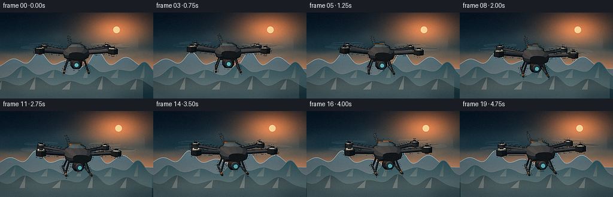
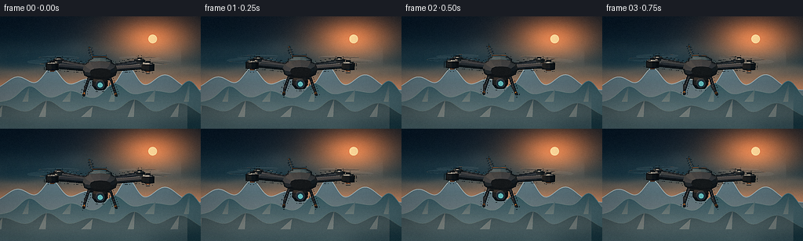

CODING AGENTS AS PIXEL WORLD MODELS
traex/DeepSeek-V4.1-Flash · instance_preservation_0040
点击播放 · 原生 RGB 像素
逐轮保存的候选
回放视频、检查图与代码变化。
每份候选均可单独播放。实际图片检查记录在下方工具轨迹中。
候选 01播放与检查图
点击播放 · 原生 RGB 像素


展开代码变化
--- 上一保存版本
+++ 本次保存版本
@@ -0,0 +1,673 @@
+"""Procedural pixel-art render of a drone hovering above a mountain cloud sea."""
+
+from __future__ import annotations
+
+import math
+from pathlib import Path
+
+import numpy as np
+from PIL import Image, ImageDraw, ImageFilter
+
+import artifact_io
+
+
+CASE_DIR = Path(__file__).resolve().parent
+WIDTH = 256
+HEIGHT = 144
+FPS = 4
+FRAMES = 20
+SS = 4
+RW = WIDTH * SS
+RH = HEIGHT * SS
+
+
+def color(value: str) -> np.ndarray:
+ value = value.lstrip("#")
+ return np.array([int(value[i : i + 2], 16) / 255.0 for i in (0, 2, 4)], dtype=np.float32)
+
+
+def normalize(vector: np.ndarray) -> np.ndarray:
+ length = float(np.linalg.norm(vector))
+ return vector / max(length, 1e-8)
+
+
+def smoothstep(edge0: float, edge1: float, value: np.ndarray | float):
+ x = np.clip((value - edge0) / (edge1 - edge0), 0.0, 1.0)
+ return x * x * (3.0 - 2.0 * x)
+
+
+def rotation_y(angle: float) -> np.ndarray:
+ c, s = math.cos(angle), math.sin(angle)
+ return np.array([[c, 0.0, s], [0.0, 1.0, 0.0], [-s, 0.0, c]], dtype=np.float32)
+
+
+def rotation_x(angle: float) -> np.ndarray:
+ c, s = math.cos(angle), math.sin(angle)
+ return np.array([[1.0, 0.0, 0.0], [0.0, c, -s], [0.0, s, c]], dtype=np.float32)
+
+
+def rotation_z(angle: float) -> np.ndarray:
+ c, s = math.cos(angle), math.sin(angle)
+ return np.array([[c, -s, 0.0], [s, c, 0.0], [0.0, 0.0, 1.0]], dtype=np.float32)
+
+
+class Camera:
+ def __init__(self, eye: np.ndarray, target: np.ndarray):
+ self.eye = np.asarray(eye, dtype=np.float32)
+ self.forward = normalize(np.asarray(target, dtype=np.float32) - self.eye)
+ self.right = normalize(np.cross(self.forward, np.array([0.0, 1.0, 0.0], dtype=np.float32)))
+ self.up = normalize(np.cross(self.right, self.forward))
+ self.focal = 2.48 * RH
+
+ def project(self, point: np.ndarray) -> tuple[float, float, float]:
+ relative = np.asarray(point, dtype=np.float32) - self.eye
+ x = float(np.dot(relative, self.right))
+ y = float(np.dot(relative, self.up))
+ z = float(np.dot(relative, self.forward))
+ depth = max(z, 0.04)
+ return RW * 0.5 + self.focal * x / depth, RH * 0.5 - self.focal * y / depth, z
+
+
+class Mesh:
+ def __init__(self):
+ self.faces: list[tuple[list[np.ndarray], np.ndarray]] = []
+
+ def quad(self, points: list[np.ndarray], tint: np.ndarray):
+ self.faces.append(([np.asarray(p, dtype=np.float32) for p in points], tint))
+
+ def triangle(self, points: list[np.ndarray], tint: np.ndarray):
+ self.faces.append(([np.asarray(p, dtype=np.float32) for p in points], tint))
+
+ def transformed(self, rotation: np.ndarray, translation: np.ndarray) -> "Mesh":
+ result = Mesh()
+ for points, tint in self.faces:
+ result.faces.append(([(rotation @ p) + translation for p in points], tint))
+ return result
+
+
+def add_cuboid(mesh: Mesh, center, size, tint, basis: np.ndarray | None = None):
+ center = np.asarray(center, dtype=np.float32)
+ half = np.asarray(size, dtype=np.float32) * 0.5
+ if basis is None:
+ basis = np.eye(3, dtype=np.float32)
+ local = np.array(
+ [
+ [-1, -1, -1],
+ [1, -1, -1],
+ [1, 1, -1],
+ [-1, 1, -1],
+ [-1, -1, 1],
+ [1, -1, 1],
+ [1, 1, 1],
+ [-1, 1, 1],
+ ],
+ dtype=np.float32,
+ )
+ points = [center + basis @ (corner * half) for corner in local]
+ for indices in (
+ (0, 3, 2, 1),
+ (4, 5, 6, 7),
+ (0, 4, 7, 3),
+ (1, 2, 6, 5),
+ (0, 1, 5, 4),
+ (3, 7, 6, 2),
+ ):
+ mesh.quad([points[index] for index in indices], tint)
+
+
+def add_tube(
+ mesh: Mesh,
+ start,
+ end,
+ radius: float,
+ tint,
+ segments: int = 8,
+ caps: bool = True,
+):
+ start = np.asarray(start, dtype=np.float32)
+ end = np.asarray(end, dtype=np.float32)
+ axis = normalize(end - start)
+ helper = np.array([0.0, 1.0, 0.0], dtype=np.float32)
+ if abs(float(np.dot(axis, helper))) > 0.92:
+ helper = np.array([1.0, 0.0, 0.0], dtype=np.float32)
+ u = normalize(np.cross(axis, helper))
+ v = normalize(np.cross(axis, u))
+ ring_start = []
+ ring_end = []
+ for index in range(segments):
+ angle = 2.0 * math.pi * index / segments
+ offset = radius * (math.cos(angle) * u + math.sin(angle) * v)
+ ring_start.append(start + offset)
+ ring_end.append(end + offset)
+ for index in range(segments):
+ nxt = (index + 1) % segments
+ mesh.quad([ring_start[index], ring_end[index], ring_end[nxt], ring_start[nxt]], tint)
+ if caps:
+ mesh.quad(list(reversed(ring_start)), tint * 0.72)
+ mesh.quad(ring_end, tint * 1.08)
+
+
+def add_cylinder(mesh: Mesh, center, radius: float, height: float, tint, segments: int = 10):
+ center = np.asarray(center, dtype=np.float32)
+ add_tube(
+ mesh,
+ center - np.array([0.0, height * 0.5, 0.0], dtype=np.float32),
+ center + np.array([0.0, height * 0.5, 0.0], dtype=np.float32),
+ radius,
+ tint,
+ segments,
+ )
+
+
+def add_ellipsoid(mesh: Mesh, center, radii, tint, rings: int = 6, segments: int = 12):
+ center = np.asarray(center, dtype=np.float32)
+ radii = np.asarray(radii, dtype=np.float32)
+ rows: list[list[np.ndarray]] = []
+ for ring in range(rings + 1):
+ phi = math.pi * ring / rings
+ y = math.cos(phi)
+ radius = math.sin(phi)
+ row = []
+ for segment in range(segments):
+ theta = 2.0 * math.pi * segment / segments
+ row.append(center + radii * np.array([radius * math.cos(theta), y, radius * math.sin(theta)]))
+ rows.append(row)
+ for ring in range(rings):
+ for segment in range(segments):
+ nxt = (segment + 1) % segments
+ mesh.quad([rows[ring][segment], rows[ring + 1][segment], rows[ring + 1][nxt], rows[ring][nxt]], tint)
+
+
+def add_fuselage(mesh: Mesh):
+ rings = [
+ (-0.82, 0.23, 0.10),
+ (-0.67, 0.34, 0.17),
+ (-0.34, 0.41, 0.22),
+ (0.28, 0.38, 0.21),
+ (0.62, 0.27, 0.13),
+ ]
+ segments = 12
+ loops = []
+ for z, rx, ry in rings:
+ loop = []
+ for index in range(segments):
+ angle = 2.0 * math.pi * index / segments
+ x = rx * math.copysign(abs(math.cos(angle)) ** 0.78, math.cos(angle))
+ y = ry * math.copysign(abs(math.sin(angle)) ** 0.78, math.sin(angle))
+ loop.append(np.array([x, y, z], dtype=np.float32))
+ loops.append(loop)
+ for row in range(len(loops) - 1):
+ for index in range(segments):
+ nxt = (index + 1) % segments
+ mesh.quad(
+ [loops[row][index], loops[row + 1][index], loops[row + 1][nxt], loops[row][nxt]],
+ color("#26323b"),
+ )
+ mesh.quad(list(reversed(loops[0])), color("#10181d"))
+ mesh.quad(loops[-1], color("#34434b"))
+
+
+def build_drone(frame: int) -> tuple[Mesh, list[tuple[np.ndarray, float, float]], np.ndarray, np.ndarray]:
+ t = frame / FPS
+ hover = np.array(
+ [
+ 0.11 * math.sin(1.05 * t + 0.2),
+ 0.075 * math.sin(1.55 * t + 0.8) + 0.025 * math.sin(2.4 * t),
+ 0.035 * math.sin(0.8 * t + 0.4),
+ ],
+ dtype=np.float32,
+ )
+ yaw = math.radians(8.0 * math.sin(0.42 * t + 0.15))
+ pitch = math.radians(1.6 * math.sin(1.1 * t + 0.7))
+ roll = math.radians(2.4 * math.sin(0.78 * t + 0.2))
+ rotation = rotation_y(yaw) @ rotation_x(pitch) @ rotation_z(roll)
+
+ mesh = Mesh()
+ graphite = color("#26313a")
+ graphite_dark = color("#111a20")
+ graphite_light = color("#44525a")
+ orange = color("#f07a32")
+ warm_gray = color("#b6b2a5")
+
+ add_fuselage(mesh)
+ add_ellipsoid(mesh, (0.0, 0.175, -0.03), (0.31, 0.12, 0.40), color("#314b55"), 5, 12)
+ add_cuboid(mesh, (0.0, 0.22, 0.40), (0.37, 0.10, 0.25), orange)
+ add_cuboid(mesh, (-0.355, -0.01, 0.02), (0.035, 0.14, 0.46), orange)
+ add_cuboid(mesh, (0.355, -0.01, 0.02), (0.035, 0.14, 0.46), orange)
+ add_cuboid(mesh, (0.0, -0.225, 0.08), (0.48, 0.06, 0.66), graphite_dark)
+
+ rotor_centers = [
+ np.array([-1.08, 0.105, -0.58], dtype=np.float32),
+ np.array([1.08, 0.105, -0.58], dtype=np.float32),
+ np.array([-1.08, 0.105, 0.58], dtype=np.float32),
+ np.array([1.08, 0.105, 0.58], dtype=np.float32),
+ ]
+ for index, rotor in enumerate(rotor_centers):
+ sx = -1.0 if rotor[0] < 0.0 else 1.0
+ sz = -1.0 if rotor[2] < 0.0 else 1.0
+ shoulder = np.array([sx * 0.23, 0.01, sz * 0.23], dtype=np.float32)
+ add_tube(mesh, shoulder, rotor - np.array([sx * 0.12, 0.0, sz * 0.06]), 0.060, graphite, 8)
+ add_tube(
+ mesh,
+ shoulder + np.array([0.0, 0.045, 0.0], dtype=np.float32),
+ rotor - np.array([sx * 0.16, -0.045, sz * 0.09], dtype=np.float32),
+ 0.022,
+ graphite_light,
+ 6,
+ )
+ add_cylinder(mesh, rotor, 0.145, 0.15, graphite_dark, 10)
+ add_cylinder(
+ mesh,
+ rotor + np.array([0.0, 0.085, 0.0], dtype=np.float32),
+ 0.112,
+ 0.035,
+ warm_gray,
+ 10,
+ )
+ add_cylinder(
+ mesh,
+ rotor + np.array([0.0, 0.115, 0.0], dtype=np.float32),
+ 0.055,
+ 0.035,
+ graphite_dark,
+ 8,
+ )
+ add_cuboid(
+ mesh,
+ rotor + np.array([0.0, -0.03, 0.0], dtype=np.float32),
+ (0.09, 0.16, 0.09),
+ orange,
+ )
+
+ # Camera gimbal and glass lens.
+ add_ellipsoid(mesh, (0.0, -0.30, -0.43), (0.19, 0.18, 0.17), graphite_dark, 5, 10)
+ add_tube(
+ mesh,
+ (0.0, -0.30, -0.55),
+ (0.0, -0.30, -0.66),
+ 0.105,
+ graphite,
+ 12,
+ )
+ add_tube(
+ mesh,
+ (0.0, -0.30, -0.655),
+ (0.0, -0.30, -0.675),
+ 0.080,
+ color("#12384a"),
+ 12,
+ )
+ add_tube(
+ mesh,
+ (0.0, -0.30, -0.675),
+ (0.0, -0.30, -0.681),
+ 0.057,
+ color("#5dc4cb"),
+ 12,
+ )
+
+ # Two landing rails with splayed legs.
+ for sx in (-1.0, 1.0):
+ rail_x = 0.37 * sx
+ for z in (-0.36, 0.35):
+ add_tube(
+ mesh,
+ (0.25 * sx, -0.19, z * 0.62),
+ (rail_x, -0.54, z),
+ 0.027,
+ graphite,
+ 7,
+ )
+ add_tube(
+ mesh,
+ (rail_x, -0.55, -0.62),
+ (rail_x, -0.55, 0.62),
+ 0.030,
+ graphite_light,
+ 7,
+ )
+ add_tube(
+ mesh,
+ (rail_x, -0.552, -0.56),
+ (rail_x, -0.552, -0.42),
+ 0.035,
+ orange,
+ 7,
+ )
+
+ # Rear antenna.
+ add_tube(mesh, (0.17, 0.22, 0.52), (0.26, 0.48, 0.62), 0.012, warm_gray, 5)
+ add_ellipsoid(mesh, (0.263, 0.49, 0.623), (0.024, 0.024, 0.024), orange, 3, 6)
+
+ world_mesh = mesh.transformed(rotation, hover)
+ rotor_world = [(rotation @ rotor) + hover for rotor in rotor_centers]
+ rotors = []
+ for index, rotor in enumerate(rotor_world):
+ phase = t * (14.5 + index * 0.23) + index * 0.8
+ rotors.append((rotor + np.array([0.0, 0.12, 0.0], dtype=np.float32), phase, 0.54))
+ return world_mesh, rotors, hover, rotation
+
+
+def build_cloud_texture(seed: int, count: int, y_center: float, spread: float) -> Image.Image:
+ rng = np.random.default_rng(seed)
+ layer = Image.new("RGBA", (RW, RH), (0, 0, 0, 0))
+ draw = ImageDraw.Draw(layer)
+ for index in range(count):
+ x = rng.uniform(-0.12, 1.12) * RW
+ y = (y_center + rng.normal(0.0, spread)) * RH
+ length = rng.uniform(0.05, 0.19) * RW
+ height = rng.uniform(0.006, 0.025) * RH
+ alpha = int(rng.uniform(20, 58))
+ if index % 3 == 0:
+ tint = (238, 206, 186, alpha)
+ elif index % 3 == 1:
+ tint = (209, 220, 218, alpha)
+ else:
+ tint = (243, 179, 145, alpha)
+ draw.ellipse(
+ (x - length, y - height, x + length, y + height),
+ fill=tint,
+ )
+ return layer.filter(ImageFilter.GaussianBlur(9.0 * SS))
+
+
+def build_cloud_sea() -> Image.Image:
+ rng = np.random.default_rng(901)
+ layer = Image.new("RGBA", (RW, RH), (0, 0, 0, 0))
+ draw = ImageDraw.Draw(layer)
+ for row in range(6):
+ y = (0.76 + row * 0.042) * RH
+ for _ in range(20):
+ x = rng.uniform(-0.1, 1.1) * RW
+ length = rng.uniform(0.05, 0.16) * RW
+ height = rng.uniform(0.018, 0.055) * RH
+ if row < 2:
+ fill = (224, 213, 203, rng.integers(25, 52))
+ elif row < 4:
+ fill = (214, 210, 201, rng.integers(48, 82))
+ else:
+ fill = (185, 199, 197, rng.integers(55, 88))
+ draw.ellipse((x - length, y - height, x + length, y + height), fill=tuple(int(v) for v in fill))
+ return layer.filter(ImageFilter.GaussianBlur(13.0 * SS))
+
+
+CIRRUS = build_cloud_texture(441, 34, 0.31, 0.085)
+CLOUD_SEA = build_cloud_sea()
+
+
+def make_sky(t: float, camera: Camera) -> Image.Image:
+ y, x = np.mgrid[0:RH, 0:RW].astype(np.float32)
+ u = x / max(RW - 1, 1)
+ v = y / max(RH - 1, 1)
+
+ top = color("#071522")
+ upper = color("#163c4b")
+ horizon = color("#cf8a62")
+ image = np.zeros((RH, RW, 3), dtype=np.float32)
+ mix_upper = smoothstep(0.0, 0.58, v)[..., None]
+ image[:] = top * (1.0 - mix_upper) + upper * mix_upper
+ mix_horizon = smoothstep(0.38, 0.70, v)[..., None]
+ image = image * (1.0 - mix_horizon) + horizon * mix_horizon
+
+ sun_x = 0.76 * RW + 8.0 * SS * math.sin(0.16 * t)
+ sun_y = 0.20 * RH
+ radial = ((x - sun_x) / (0.34 * RW)) ** 2 + ((y - sun_y) / (0.33 * RH)) ** 2
+ glow = np.exp(-radial * 3.2)
+ broad_glow = np.exp(-radial * 0.72)
+ image += glow[..., None] * np.array([0.75, 0.34, 0.12], dtype=np.float32)
+ image += broad_glow[..., None] * np.array([0.15, 0.09, 0.045], dtype=np.float32)
+ sun_disk = (x - sun_x) ** 2 + (y - sun_y) ** 2 <= (0.022 * RW) ** 2
+ image[sun_disk] = np.array([1.0, 0.86, 0.62], dtype=np.float32)
+
+ # Warm bands add depth without turning the sky into a flat gradient.
+ band = np.exp(-((v - 0.48 - 0.018 * np.sin(u * 18.0 + t * 0.15)) / 0.035) ** 2)
+ image += band[..., None] * np.array([0.06, 0.035, 0.02], dtype=np.float32)
+ image = np.clip(image, 0.0, 1.0)
+ return Image.fromarray((image * 255.0 + 0.5).astype(np.uint8), "RGB")
+
+
+def ridge_curve(
+ base_y: float,
+ peaks: list[tuple[float, float, float]],
+ phase: float,
+ parallax: float,
+) -> np.ndarray:
+ x = np.arange(RW, dtype=np.float32)
+ ridge = np.full(RW, base_y * RH, dtype=np.float32)
+ for center, width, height in peaks:
+ shifted = center * RW - parallax
+ ridge -= height * RH * np.exp(-((x - shifted) / (width * RW)) ** 2)
+ ridge += (0.008 * RH) * np.sin(x / (17.0 * SS) + phase)
+ ridge += (0.004 * RH) * np.sin(x / (7.0 * SS) + phase * 1.7)
+ return ridge
+
+
+def draw_mountains(image: Image.Image, t: float, camera: Camera):
+ draw = ImageDraw.Draw(image, "RGBA")
+ parallax = camera.eye[0] * 120.0 * SS
+ layers = [
+ (
+ 0.655,
+ [(0.09, 0.085, 0.12), (0.26, 0.060, 0.18), (0.44, 0.090, 0.10), (0.64, 0.055, 0.20), (0.83, 0.080, 0.14)],
+ (91, 116, 126, 255),
+ (154, 170, 173, 210),
+ 0.40,
+ ),
+ (
+ 0.760,
+ [(0.15, 0.070, 0.13), (0.36, 0.095, 0.10), (0.58, 0.070, 0.15), (0.78, 0.110, 0.11), (0.95, 0.060, 0.17)],
+ (48, 88, 99, 255),
+ (91, 124, 129, 220),
+ 0.72,
+ ),
+ (
+ 0.895,
+ [(0.02, 0.090, 0.10), (0.24, 0.080, 0.15), (0.47, 0.120, 0.09), (0.68, 0.075, 0.16), (0.90, 0.090, 0.12)],
+ (23, 54, 63, 255),
+ (54, 88, 92, 220),
+ 1.10,
+ ),
+ ]
+ for index, (base, peaks, fill, edge, motion) in enumerate(layers):
+ ridge = ridge_curve(base, peaks, 0.8 + index * 1.7, parallax * motion)
+ points = [(0, RH + 2)] + [(int(x), int(ridge[x])) for x in range(RW)] + [(RW - 1, RH + 2)]
+ draw.polygon(points, fill=fill)
+ line = [(int(x), int(ridge[x])) for x in range(RW)]
+ draw.line(line, fill=edge, width=max(1, SS - index))
+
+ # Slanted light planes make the nearest ridges feel sculpted rather than cut out.
+ if index >= 1:
+ for center, width, height in peaks:
+ cx = int(center * RW - parallax * motion)
+ peak_y = int((base - height) * RH)
+ half = int(width * RW * 0.48)
+ light = tuple(min(255, int(channel * 1.13)) for channel in fill[:3]) + (92,)
+ draw.polygon(
+ [(cx, peak_y), (cx - half, int(base * RH)), (cx - int(half * 0.15), int(base * RH))],
+ fill=light,
+ )
+
+ # Haze catches the light at the feet of the mountains.
+ haze = Image.new("RGBA", (RW, RH), (0, 0, 0, 0))
+ haze_draw = ImageDraw.Draw(haze)
+ for i in range(5):
+ y = int((0.64 + i * 0.055) * RH)
+ haze_draw.ellipse((-0.15 * RW, y - 7 * SS, 1.15 * RW, y + 13 * SS), fill=(240, 198, 171, 22))
+ image.alpha_composite(haze.filter(ImageFilter.GaussianBlur(7 * SS)))
+
+
+def make_background(t: float, camera: Camera) -> Image.Image:
+ sky = make_sky(t, camera).convert("RGBA")
+ drift = int((camera.eye[0] * 45.0 + t * 1.8) * SS)
+ cirrus = Image.new("RGBA", (RW, RH), (0, 0, 0, 0))
+ cirrus.alpha_composite(CIRRUS, (drift % max(1, RW // 5) - RW // 10, 0))
+ sky.alpha_composite(cirrus)
+ draw_mountains(sky, t, camera)
+
+ sea_shift = int((camera.eye[0] * 90.0 + t * 1.2) * SS)
+ sea = Image.new("RGBA", (RW, RH), (0, 0, 0, 0))
+ sea.alpha_composite(CLOUD_SEA, (sea_shift % max(1, RW // 7) - RW // 14, 0))
+ sky.alpha_composite(sea)
+
+ # A low, translucent cloud veil lifts the drone off the mountain layer.
+ veil = Image.new("RGBA", (RW, RH), (0, 0, 0, 0))
+ veil_draw = ImageDraw.Draw(veil)
+ veil_draw.ellipse(
+ (-0.1 * RW, 0.73 * RH, 0.62 * RW, 0.92 * RH),
+ fill=(237, 215, 199, 42),
+ )
+ veil_draw.ellipse(
+ (0.45 * RW, 0.70 * RH, 1.1 * RW, 0.90 * RH),
+ fill=(210, 214, 205, 36),
+ )
+ sky.alpha_composite(veil.filter(ImageFilter.GaussianBlur(16 * SS)))
+ return sky.convert("RGB")
+
+
+LIGHT_DIR = normalize(np.array([0.48, 0.78, -0.55], dtype=np.float32))
+SKY_FILL = normalize(np.array([-0.25, 0.30, -0.92], dtype=np.float32))
+HORIZON_TINT = color("#b98268")
+
+
+def shaded_color(base: np.ndarray, normal: np.ndarray, camera: Camera) -> tuple[int, int, int]:
+ diffuse = max(0.0, float(np.dot(normal, LIGHT_DIR)))
+ sky = max(0.0, float(np.dot(normal, SKY_FILL)))
+ underside = max(0.0, float(np.dot(normal, np.array([0.0, -1.0, 0.0], dtype=np.float32))))
+ shade = 0.34 + 0.69 * diffuse + 0.11 * sky - 0.09 * underside
+ lit = np.clip(base * shade, 0.0, 1.0)
+ warm = np.array([0.15, 0.075, 0.025], dtype=np.float32) * (diffuse**2)
+ lit = np.clip(lit + warm, 0.0, 1.0)
+ rim = (1.0 - max(0.0, float(np.dot(normal, -camera.forward)))) ** 3
+ lit = np.clip(lit + rim * np.array([0.10, 0.075, 0.05], dtype=np.float32), 0.0, 1.0)
+ return tuple(int(channel * 255.0 + 0.5) for channel in lit)
+
+
+def render_mesh(image: Image.Image, mask: Image.Image, mesh: Mesh, camera: Camera):
+ draw = ImageDraw.Draw(image)
+ mask_draw = ImageDraw.Draw(mask)
+ projected = []
+ for points, tint in mesh.faces:
+ camera_points = []
+ screen_points = []
+ valid = True
+ for point in points:
+ sx, sy, depth = camera.project(point)
+ if depth <= 0.12:
+ valid = False
+ break
+ camera_points.append((sx, sy, depth))
+ screen_points.append((sx, sy))
+ if not valid:
+ continue
+ normal = np.cross(points[1] - points[0], points[2] - points[0])
+ if float(np.linalg.norm(normal)) < 1e-7:
+ continue
+ normal = normalize(normal)
+ center = sum(points, np.zeros(3, dtype=np.float32)) / len(points)
+ if float(np.dot(normal, camera.eye - center)) < 0.0:
+ normal = -normal
+ depth = sum(point[2] for point in camera_points) / len(camera_points)
+ projected.append((depth, screen_points, shaded_color(tint, normal, camera)))
+ for _, points, fill in sorted(projected, key=lambda item: item[0], reverse=True):
+ draw.polygon(points, fill=fill)
+ mask_draw.polygon(points, fill=255)
+
+
+def draw_rotors(image: Image.Image, rotors: list[tuple[np.ndarray, float, float]], camera: Camera):
+ overlay = Image.new("RGBA", (RW, RH), (0, 0, 0, 0))
+ draw = ImageDraw.Draw(overlay, "RGBA")
+ ordered = sorted(rotors, key=lambda item: camera.project(item[0])[2], reverse=True)
+ for center, phase, radius in ordered:
+ ring = []
+ for index in range(48):
+ angle = 2.0 * math.pi * index / 48
+ point = center + np.array(
+ [radius * math.cos(angle), 0.0, radius * math.sin(angle)],
+ dtype=np.float32,
+ )
+ sx, sy, _ = camera.project(point)
+ ring.append((sx, sy))
+ draw.polygon(ring, fill=(199, 217, 216, 17), outline=(224, 232, 226, 42))
+
+ for ghost in range(4):
+ angle_base = phase + ghost * 0.34
+ alpha = 42 if ghost < 3 else 92
+ for blade in range(2):
+ angle = angle_base + blade * math.pi
+ tangent = np.array([math.cos(angle), 0.0, math.sin(angle)], dtype=np.float32)
+ perpendicular = np.array([-math.sin(angle), 0.0, math.cos(angle)], dtype=np.float32)
+ root = center + tangent * 0.12
+ tip = center + tangent * radius
+ p0 = root + perpendicular * 0.035
+ p1 = root - perpendicular * 0.025
+ p2 = tip - perpendicular * 0.052
+ p3 = tip + perpendicular * 0.035
+ points = []
+ for point in (p0, p1, p2, p3):
+ sx, sy, _ = camera.project(point)
+ points.append((sx, sy))
+ blade_color = (16, 24, 29, alpha) if ghost == 3 else (39, 51, 56, alpha)
+ draw.polygon(points, fill=blade_color)
+ if ghost == 3:
+ draw.line([points[3], points[2]], fill=(224, 139, 80, 110), width=max(1, SS // 2))
+ image.paste(Image.alpha_composite(image.convert("RGBA"), overlay).convert("RGB"), (0, 0))
+
+
+def postprocess(image: Image.Image, frame: int) -> Image.Image:
+ small = image.resize((WIDTH, HEIGHT), Image.Resampling.LANCZOS)
+ arr = np.asarray(small, dtype=np.float32) / 255.0
+ y, x = np.mgrid[0:HEIGHT, 0:WIDTH].astype(np.float32)
+ nx = (x - (WIDTH - 1) * 0.5) / ((WIDTH - 1) * 0.5)
+ ny = (y - (HEIGHT - 1) * 0.5) / ((HEIGHT - 1) * 0.5)
+ vignette = 1.0 - 0.16 * np.clip((nx * nx * 0.82 + ny * ny * 0.55), 0.0, 1.0)
+ arr *= vignette[..., None]
+
+ # Gentle grade: cool shadows, warm highlights, and slightly richer chroma.
+ luminance = arr @ np.array([0.2126, 0.7152, 0.0722], dtype=np.float32)
+ shadows = np.clip(1.0 - luminance * 2.0, 0.0, 1.0)[..., None]
+ highlights = np.clip(luminance * 1.65 - 0.38, 0.0, 1.0)[..., None]
+ arr = arr * (1.0 + 0.12 * (luminance[..., None] - 0.48))
+ arr += shadows * np.array([-0.006, 0.005, 0.012], dtype=np.float32)
+ arr += highlights * np.array([0.018, 0.006, -0.004], dtype=np.float32)
+ arr = np.clip(arr, 0.0, 1.0)
+ graded = Image.fromarray((arr * 255.0 + 0.5).astype(np.uint8), "RGB")
+ graded = graded.filter(ImageFilter.UnsharpMask(radius=0.65, percent=115, threshold=2))
+
+ # Tiny deterministic grain keeps the downsample from looking plastic.
+ rng = np.random.default_rng(1000 + frame)
+ grain = rng.normal(0.0, 1.6, (HEIGHT, WIDTH, 1)).astype(np.float32)
+ result = np.clip(np.asarray(graded, dtype=np.float32) + grain, 0.0, 255.0)
+ return Image.fromarray(result.astype(np.uint8), "RGB")
+
+
+def render_frame(frame: int) -> np.ndarray:
+ t = frame / FPS
+ drone_mesh, rotors, hover, _ = build_drone(frame)
+
+ distance = 6.85 - 0.55 * (t / 5.0)
+ camera = Camera(
+ np.array([0.16 * math.sin(0.36 * t + 0.1), 0.94 + 0.035 * math.sin(0.5 * t), -distance], dtype=np.float32),
+ np.array([hover[0] * 0.25, -0.06 + hover[1] * 0.32, 0.0], dtype=np.float32),
+ )
+ background = make_background(t, camera)
+ mask = Image.new("L", (RW, RH), 0)
+ render_mesh(background, mask, drone_mesh, camera)
+ draw_rotors(background, rotors, camera)
+
+ small_mask = mask.resize((WIDTH, HEIGHT), Image.Resampling.LANCZOS)
+ edge = small_mask.filter(ImageFilter.FIND_EDGES)
+ edge = edge.point(lambda value: 190 if value > 18 else 0)
+ outline = Image.new("RGB", (WIDTH, HEIGHT), (7, 13, 17))
+ small = postprocess(background, frame)
+ small = Image.composite(outline, small, edge)
+ return np.asarray(small, dtype=np.uint8)
+
+
+def main():
+ frames = np.stack([render_frame(index) for index in range(FRAMES)])
+ artifact_io.save(frames, CASE_DIR)
+ print(f"saved {FRAMES} frames at {WIDTH}x{HEIGHT}, {FPS} fps")
+
+
+if __name__ == "__main__":
+ main()
可观测工具轨迹
实际执行的命令与返回图片。
命令 1exit 0
/bin/bash -c "pwd && rg --files -g 'prompt.txt' -g 'GENERATION_RULES.md' -g 'task_spec.json' -g '"'!*.mp4'"'"
命令 2exit 0
/bin/bash -c 'git status --short && ls -la'
命令 3exit 0
/bin/bash -c 'cat prompt.txt'
命令 4exit 0
/bin/bash -c 'cat GENERATION_RULES.md'
命令 5exit 0
/bin/bash -c 'cat task_spec.json'
命令 6exit 0
/bin/bash -c "sed -n '1,240p' artifact_io.py && sed -n '1,220p' player_template.html"
命令 7exit 0
/bin/bash -c 'python generate.py'
命令 8exit 127
/bin/bash -c "file inspection.png frames/00.png frames/19.png && identify -format '%f %wx%h %[mean] %[standard-deviation]\\n' inspection.png frames/00.png frames/10.png frames/19.png"
命令 9exit 0
/bin/bash -c 'command -v chafa || command -v viu || command -v jp2 || true'
命令 10exit 0
/bin/bash -c "python - <<'PY'
from PIL import Image
import numpy as np
for i in (0,5,10,15,19):
a=np.asarray(Image.open(f'frames/{i:02d}.png')).astype(np.float32)
print(i, 'mean',a.mean((0,1)).round(1), 'std',a.std().round(1), 'dark%',(a.mean(2)<40).mean().round(3), 'bright%',(a.mean(2)>210).mean().round(3))
PY"命令 11exit 0
/bin/bash -c "python - <<'PY'
from PIL import Image, ImageOps
im=Image.open('frames/00.png').resize((80,36))
chars=' .:-=+*#%@'
a=ImageOps.grayscale(im)
for row in range(a.height):
print(''.join(chars[v*(len(chars)-1)//256] for v in [a.getpixel((x,row)) for x in range(a.width)]))
PY"命令 12exit 0
/bin/bash -c "python - <<'PY'
from PIL import Image
im=Image.open('frames/00.png')
im.crop((28,25,228,120)).resize((800,380),Image.Resampling.NEAREST).save('.tmp/drone_zoom.png')
print(im.getpixel((128,70)),im.getpixel((20,20)))
PY"命令 13exit 0
/bin/bash -c "python - <<'PY'
from PIL import Image, ImageDraw
im=Image.new('RGB',(512,288),(40,40,40)); src=Image.open('frames/00.png'); im.paste(src,(0,0)); im.paste(src.resize((256,144),Image.Resampling.NEAREST),(256,0)); d=ImageDraw.Draw(im); d.text((10,10),'256x144 native | nearest 2x',fill='white'); im.save('.tmp/view.png')
PY"命令 14exit 0
/bin/bash -c "python - <<'PY'
from PIL import Image
import numpy as np
for i in range(20):
a=np.asarray(Image.open(f'frames/{i:02d}.png')).astype(np.int16)
# silhouette center area change
if i: print(i, np.abs(a-prev).mean().round(2), np.abs(a[30:115,35:221]-prev[30:115,35:221]).mean().round(2))
prev=a
PY"命令 15exit 1
/bin/bash -c 'ls -lh frames inspection.png transition_check.png pixels.npz index.html && command -v ffmpeg && ffmpeg -version | head -3'
命令 16exit 0
/bin/bash -c "python - <<'PY'
from PIL import Image,ImageOps
im=Image.open('frames/00.png').crop((30,25,226,110)).resize((98,43))
g=ImageOps.grayscale(im)
chars=' .:-=+*#%@'
for y in range(g.height):
print(''.join(chars[min(9,g.getpixel((x,y))*10//256)] for x in range(g.width)))
PY"命令 17exit 0
/bin/bash -c "python - <<'PY'
import generate as g, numpy as np
from PIL import Image,ImageDraw
m,r,h,rot=g.build_drone(0)
t=0; cam=g.Camera(np.array([.16*np.sin(.1),.94,-6.85],dtype=np.float32),np.array([h[0]*.25,-.06+h[1]*.32,0],dtype=np.float32))
im=Image.new('RGB',(g.RW,g.RH),(160,160,160)); mask=Image.new('L',(g.RW,g.RH),0); g.render_mesh(im,mask,m,cam)
small=mask.resize((128,72),Image.Resampling.LANCZOS)
for y in range(72):
print(''.join('#' if small.getpixel((x,y))>80 else ' ' for x in range(128)))
PY"命令 18exit 0
/bin/bash -c "python - <<'PY'
from PIL import Image
import numpy as np
for i in (0,10,19):
a=np.asarray(Image.open(f'frames/{i:02d}.png'))
print(i,'center',a[65:85,110:145].mean((0,1)).round(1),'bg',a[20:35,20:50].mean((0,1)).round(1))
PY"命令 19exit 0
/bin/bash -c "python - <<'PY'
from PIL import Image
im=Image.open('inspection.png')
# downscale contact sheet for compact visual inspection
im.resize((768,331),Image.Resampling.LANCZOS).save('.tmp/inspection_small.png')
PY"命令 20exit 0
/bin/bash -c "python - <<'PY'
from PIL import Image
import numpy as np
for i in (0,19):
a=np.asarray(Image.open(f'frames/{i:02d}.png')).astype(float)
# estimate orange count and cyan count
o=((a[:,:,0]>a[:,:,2]*1.35)&(a[:,:,0]>70)).mean()
c=((a[:,:,2]>a[:,:,0]*1.3)&(a[:,:,1]>a[:,:,0]*1.15)).mean()
print(i,'orange',round(o,4),'cyan',round(c,4))
PY"命令 21exit 0
/bin/bash -c "python - <<'PY'
from PIL import Image, ImageChops
import numpy as np
im=Image.open('frames/00.png').convert('RGB')
a=np.asarray(im).astype(np.float32)
# Print coarse colors over central body area
for y in range(35,106,5):
print(f'{y:3}', [tuple(a[y,x].astype(int)) for x in range(70,190,10)])
PY"命令 22exit 0
/bin/bash -c 'python -m py_compile generate.py'
命令 23exit 0
/bin/bash -c 'du -sh . && ls -1'
命令 24exit 1
/bin/bash -c "python - <<'PY'
from pathlib import Path
from PIL import Image
import json, numpy as np
spec=json.loads(Path('task_spec.json').read_text())
files=sorted(Path('frames').glob('*.png'))
assert len(files)==spec['frames'], len(files)
frames=np.stack([np.asarray(Image.open(p).convert('RGB')) for p in files])
assert frames.shape==(20,144,256,3) and frames.dtype==np.uint8
packed=np.load('pixels.npz')['pixels']
rebuilt=np.stack([((packed[:,:,i]>>16)&255, (packed[:,:,i]>>8)&255, packed[:,:,i]&255) for i in range(20)],axis=-1)
assert np.array_equal(frames,rebuilt.astype(np.uint8))
assert all((Path(n).stat().st_size>0) for n in ('index.html','inspection.png','transition_check.png'))
diffs=[np.abs(frames[i].astype(np.int16)-frames[i-1]).mean() for i in range(1,20)]
print('shape', frames.shape, 'dtype', frames.dtype)
print('frame-diff range', round(min(diffs),2), round(max(diffs),2))
print('unique colors per frame', int(np.median([len(np.unique(f.reshape(-1,3),axis=0)) for f in frames])))
print('artifact round-trip: OK')
PY"命令 25exit 0
/bin/bash -c "python - <<'PY'
from pathlib import Path
from PIL import Image
import json, numpy as np
spec=json.loads(Path('task_spec.json').read_text())
files=sorted(Path('frames').glob('*.png'))
frames=np.stack([np.asarray(Image.open(p).convert('RGB')) for p in files])
packed=np.load('pixels.npz')['pixels']
print('spec', spec)
print('files', len(files), files[0], files[-1])
print('frames', frames.shape, frames.dtype)
print('packed', packed.shape, packed.dtype)
rebuilt=np.empty_like(frames)
for i in range(20):
v=packed[:,:,i]
rebuilt[i,:,:,0]=(v>>16)&255
rebuilt[i,:,:,1]=(v>>8)&255
rebuilt[i,:,:,2]=v&255
print('equal', np.array_equal(frames,rebuilt), 'maxdiff',np.abs(frames.astype(int)-rebuilt.astype(int)).max())
for name in ('index.html','inspection.png','transition_check.png'):
print(name, Path(name).stat().st_size)
PY"命令 26exit 0
/bin/bash -c "python - <<'PY'
from pathlib import Path
from PIL import Image
import numpy as np
files=sorted(Path('frames').glob('*.png'))
frames=np.stack([np.asarray(Image.open(p).convert('RGB')) for p in files])
diffs=[float(np.abs(frames[i].astype(np.int16)-frames[i-1]).mean()) for i in range(1,20)]
print('frame-diff range', round(min(diffs),2), round(max(diffs),2))
print('unique colors median', int(np.median([len(np.unique(f.reshape(-1,3),axis=0)) for f in frames])))
print('artifact round-trip: OK')
PY"命令 27exit 0
/bin/bash -c 'ls -lh generate.py index.html inspection.png pixels.npz && git status --short -- generate.py frames index.html pixels.npz inspection.png transition_check.png'
命令 28exit 0
/bin/bash -c 'git status --short --untracked-files=all | head -60'
保存候选 1 份；完成命令 28 次；可验证图片返回 0 张。原始 API 响应与完整日志保留在本地。